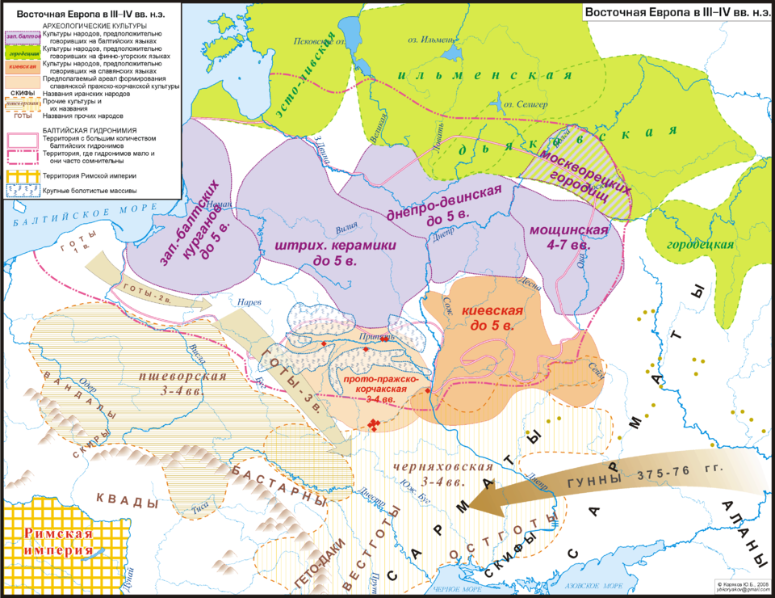

2026 Славянский этногенез.
Славянский этногенез
Введение в славянский этногенез
Этногене́з славя́н — процесс формирования древнеславянской этнической общности, приведший к выделению славян из конгломерата индоевропейского или балто-славянского населения.
По данным археологии, этническая общность славян сложилась не позднее второй половины IV века. Первой достоверно славянской (праславянской) археологической культурой, по мнению большинства археологов, является пражско-корчакская культура V—VII веков.
Близость славянских языков при значительном современном ареале расселения славян и отсутствии у славян когда-либо политического единства, а также языковое сходство древнейших славянских письменных памятников (конец 1-го — начало 2-го тысячелетия) свидетельствуют об относительно компактной территории исходного проживания и позднем распаде славянской общности. Большинство исследователей, основываясь на данных исторического языкознания, письменных источников и археологии, считают, что древние славяне проживали в лесной и лесостепной зоне Центральной и Восточной Европы от реки Одер до Среднего Поднепровья и прилегающего Полесья. Учёные помещают прародину славян в пределах этой территории в Среднем Поднепровье, Полесье, Висло-Одерском регионе (польский лингвист Т. Лер-Сплавиньский, его последователи и др.), северо-восточном Прикарпатье (немецкий лингвист Ю. Удольф и др.), Среднем Подунавье (О. Н. Трубачёв) и др.
Показать подробности

Область балто-славянского диалектного континуума (фиолетовый) с предполагаемой материальной культурой
Соотносимой с носителями балто-славянского языка в бронзовом веке (белый)
Красные точки — архаичные славянские гидронимы
Мифы и реальность: откуда пришли славяне?
Происхождение славян остается одной из самых обсуждаемых тем в исторической науке. Существует несколько гипотез о том, откуда пришли славяне:
- Теория автохтонности утверждает, что славяне всегда жили на территории Восточной Европы и не были мигрировавшими народами.
- Теория индоевропейского происхождения предполагает, что славяне являются частью более широкой индоевропейской семьи народов, которая сформировалась на территориях, включая южную и восточную Европу.
- Современные исследования подтверждают, что славяне, как и многие другие народы, были результатом длительных миграций и смешения различных этнических групп.
Археологические данные
Преимущественно со склавинами соотносятся памятники VI—VII веков пражской культуры (включая суковско-дзедзицкий тип), ипотешти-кындештской группы и производных от них. Присутствие славян на части территории Балкан, отмеченное топонимией вплоть до Греции, археологически слабо подтверждено. С антами связывается пеньковская культура.
Предположительно, с частью венедов и другими славянскими группами могут быть сопоставлены памятники V—VII веков типа верхних (поздних) слоёв тушемлинской культуры, культуры длинных курганов, колочинской культуры и др., а также некоторые памятники лесостепного Подонья (из группы Замятино — Чертовицкое, ряд пеньковских и колочинских памятников) и Поволжья (именьковская культура). Эти культуры восходят к памятникам первой половины 1-го тысячелетия киевской культуры и других групп, восходящих, в свою очередь к традициям зарубинецкой культуры (III / II век до н. э. — II век н. э.). К славянскому кругу ряд исследователей относят также часть носителей пшеворской культуры (II век до н. э. — IV век н. э.), памятников лимигантов, отдельные компоненты черняховской культуры (II—IV века) и др. Первой достоверно славянской (праславянской) археологической культурой, по мнению большинства археологов, является пражско-корчакская культура, объединяющая регионы славянского мира, которые в результате распада праславянской общности стали ареалами самостоятельных славянских этнолингвистических групп — южных, западных и восточных славян. Памятники пражской культуры получили распространение на Балканах и достигли Среднего Поднепровья. Консенсус о пражско-корчакской культуре как самой ранней достоверно славянской сложился по причине того, что её датировка совпала с первыми достоверными письменными упоминаниями славян, а также из-за того, что прослеживается её археологическая связь с последующими достоверно славянскими культурами Средней и Восточной Европы, чего нельзя сказать о культурах, которые ей предшествовали — зарубинецкая в Верхнем Поднепровье, черняховской в Северном Причерноморье и др. Распространение пражско-корчакской культуры на больших территориях Центральной и Восточной Европы, от Эльбы и Дуная до Среднего Поднепровья, коррелирует со свидетельствами письменных источников о расселении славян, которое В. Н. Топоров и вслед за ним ряд других учёных называют демографическим взрывом.
Показать подробности

Основные этапы формирования славянских народов
Славяне прошли несколько ключевых этапов в своем развитии:
Расселение и разделение на группы
-
Примерно в VI веке началось Великое переселение народов, что стало катализатором для расселения славян. В ходе этого процесса происходила этническая дифференциация, в результате которой выделились три основные группы славян:
- Южные (сербы, хорваты, болгары) — осели на Балканском полуострове и слились с населением Византии.
- Западные (поляки, чехи, словаки) — освоили территорию Центральной Европы.
- Восточные (предки современных русских, белорусов, украинцев) — расселились на обширной территории Восточно-Европейской равнины: от Балтики на западе до реки Оки на востоке, от Белого моря на севере до Чёрного моря на юге.
Выделение славян из индоевропейского сообщества
Учёные считают, что в I тысячелетии н. э. славянские народы выделились из индоевропейного сообщества в отдельную группу. В это время славяне заселили обширные территории Европы: от Балкан до современной Белоруссии и от Днепра до областей Центральной Европы.
Образование славянских государств
Первоначально славяне жили родами и племенами во главе с князьями. Необходимость защиты от более сильных соседей и стремление расширить сферу влияния привели к объединению племён и созданию племенных союзов, которые становились основой будущих славянских государств.
- VII век — появляются первые славянские государственные объединения, например, Союз семи племён и государство Само.
- IX век — у большинства славян идёт процесс складывания государственности. Первым крупным политическим объединением западных славян стала Великая Моравия.
- В середине XI века оформлялась государственность у хорватов и сербов, которые подчинили себе другие южнославянские племена.
Некоторые этапы формирования государственности:

Заключение
Славянский этногенез — это сложный и многогранный процесс, который длился тысячи лет. В нём приняли участие не только славяне, но и множество соседних народов, а также географические и культурные факторы. Славянский этнос сыграл важную роль в истории Европы и продолжает влиять на современный мир, несмотря на изменения в политических, социальных и культурных контекстах.